Someone hacked the freezers.
Attackers changed temperature settings in supermarkets across Europe and at French blood storage sites. Now five US agencies say every cold-chain operator should assume it is next.
Delhaize, Carrefour, Spar and France's EFS: attackers changed freezer settings, and five US agencies issued guidance.
Northflank, WorkOS and Trigger.dev: AI developer platforms breached, with stolen keys abused within minutes.
Four Bay Street law firms: fake IT calls on Teams. Microsoft showed how such a call ends at domain admin.
Crédit Mutuel Arkéa: a cyberattack enabled fraudulent transfers, about $133m traced through crypto exchanges.
The pattern this week was simple. Attackers went where the owners were not looking. Freezers run by facilities contractors, sales tools nobody classed as sensitive, certificates that outlive a password reset. If I had one hour on Monday, I would ask every team which system they run that security has never seen.
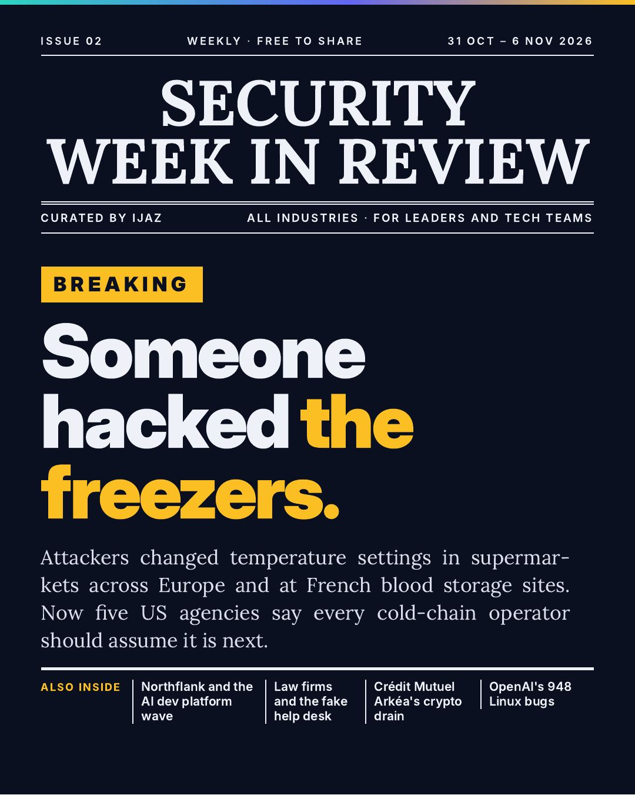
Read this page as text
ISSUE 02
W E E K LY · F R E E T O S H A R E
31 OCT – 6 NOV 2026
SECURITY WEEK IN REVIEW C U R AT E D B Y I JA Z
ALL INDUSTRIES · FOR LEADERS AND TECH TEAMS
BREAKING
Someone hacked the freezers.
Attackers changed temperature settings in supermarkets across Europe and at French blood storage sites. Now five US agencies say every cold-chain operator should assume it is next. ALSO INSIDE
Northflank and the AI dev platform wave
Law firms and the fake help desk
Crédit Mutuel Arkéa's crypto drain
OpenAI's 948 Linux bugs
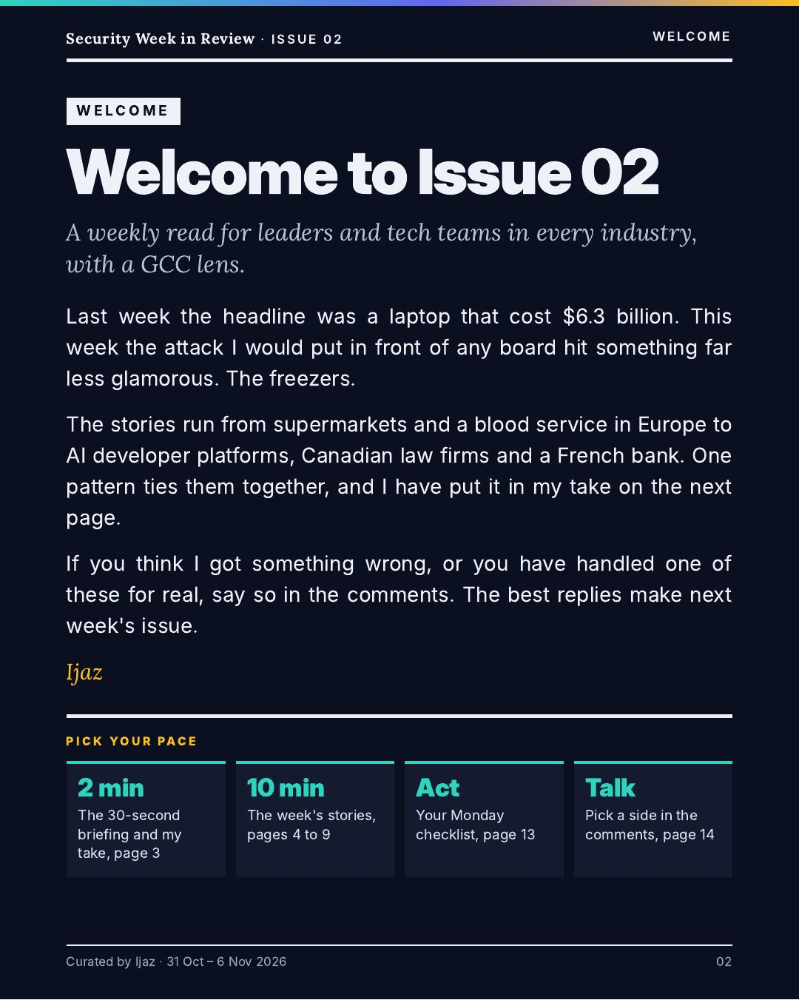
Read this page as text
WELCOME
Security Week in Review · I S S U E 0 2
WELCOME
Welcome to Issue 02
A weekly read for leaders and tech teams in every industry, with a GCC lens.
Last week the headline was a laptop that cost $6.3 billion. This week the attack I would put in front of any board hit something far less glamorous. The freezers. The stories run from supermarkets and a blood service in Europe to AI developer platforms, Canadian law firms and a French bank. One pattern ties them together, and I have put it in my take on the next page. If you think I got something wrong, or you have handled one of these for real, say so in the comments. The best replies make next week's issue. Ijaz P I C K Y O U R PA C E
2 min
The 30-second briefing and my take, page 3
10 min
The week's stories, pages 4 to 9
Curated by Ijaz · 31 Oct – 6 Nov 2026
Act
Your Monday checklist, page 13
Talk
Pick a side in the comments, page 14
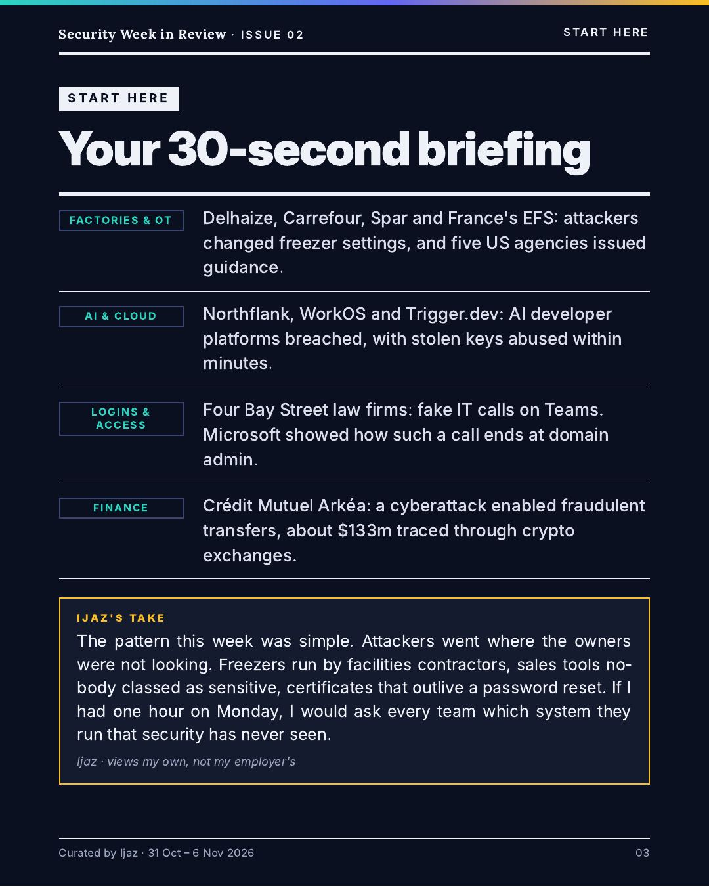
Read this page as text
Security Week in Review · I S S U E 0 2
S TA R T H E R E
S TA R T H E R E
Your 30-second briefing FACTORIES & OT
AI & CLOUD
LOGINS & ACCESS
FINANCE
Delhaize, Carrefour, Spar and France's EFS: attackers changed freezer settings, and five US agencies issued guidance. Northflank, WorkOS and Trigger.dev: AI developer platforms breached, with stolen keys abused within minutes. Four Bay Street law firms: fake IT calls on Teams. Microsoft showed how such a call ends at domain admin. Crédit Mutuel Arkéa: a cyberattack enabled fraudulent transfers, about $133m traced through crypto exchanges.
I J A Z ' S TA K E
The pattern this week was simple. Attackers went where the owners were not looking. Freezers run by facilities contractors, sales tools nobody classed as sensitive, certificates that outlive a password reset. If I had one hour on Monday, I would ask every team which system they run that security has never seen. Ijaz · views my own, not my employer's
Curated by Ijaz · 31 Oct – 6 Nov 2026
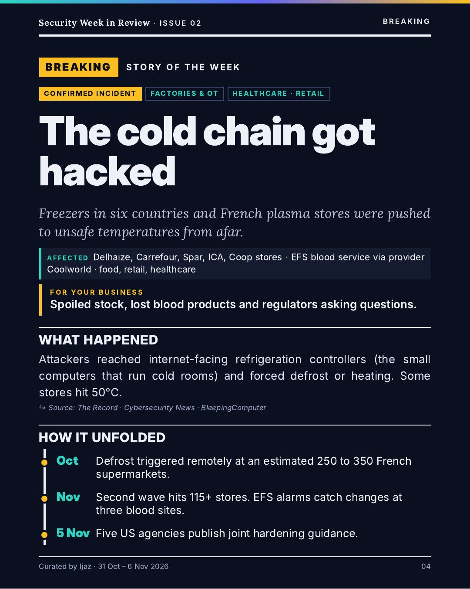
Read this page as text
BREAKING
Security Week in Review · I S S U E 0 2
BREAKING
S TO RY O F T H E W E E K
CONFIRMED INCIDENT
FACTORIES & OT
HEALTHCARE · RETAIL
The cold chain got hacked Freezers in six countries and French plasma stores were pushed to unsafe temperatures from afar. A F F E C T E D Delhaize, Carrefour, Spar, ICA, Coop stores · EFS blood service via provider
Coolworld · food, retail, healthcare F O R YO U R B U S I N E S S
Spoiled stock, lost blood products and regulators asking questions.
WHAT HAPPENED
Attackers reached internet-facing refrigeration controllers (the small computers that run cold rooms) and forced defrost or heating. Some stores hit 50°C. ↳ Source: The Record · Cybersecurity News · BleepingComputer
HOW IT UNFOLDED Oct
Defrost triggered remotely at an estimated 250 to 350 French supermarkets.
Nov Second wave hits 115+ stores. EFS alarms catch changes at three blood sites.
5 Nov Five US agencies publish joint hardening guidance. Curated by Ijaz · 31 Oct – 6 Nov 2026
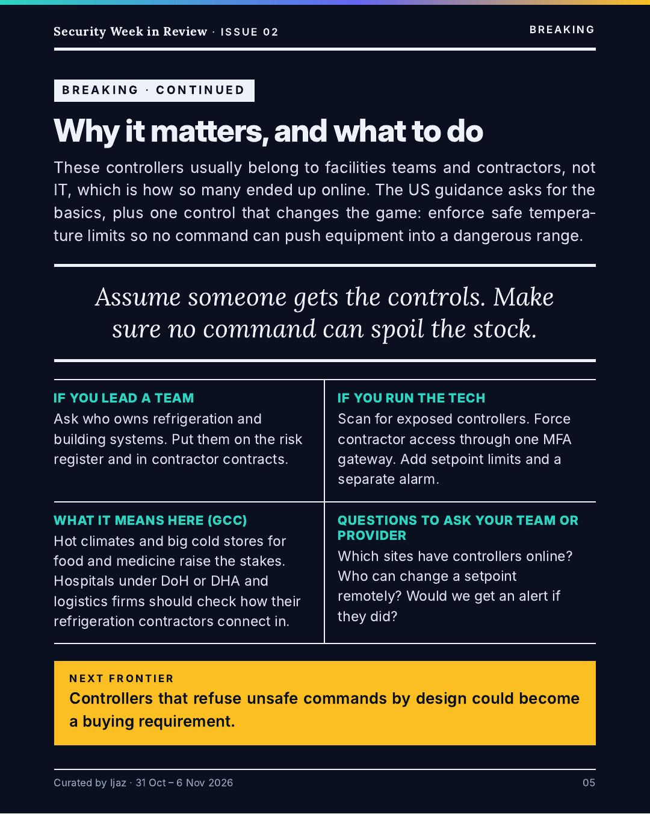
Read this page as text
BREAKING
Security Week in Review · I S S U E 0 2
BREAKING · CONTINUED
Why it matters, and what to do
These controllers usually belong to facilities teams and contractors, not IT, which is how so many ended up online. The US guidance asks for the basics, plus one control that changes the game: enforce safe temperature limits so no command can push equipment into a dangerous range.
Assume someone gets the controls. Make sure no command can spoil the stock. IF YOU LEAD A TEAM
IF YOU RUN THE TECH
WHAT IT MEANS HERE (GCC)
QUESTIONS TO ASK YOUR TEAM OR PROVIDER
Ask who owns refrigeration and building systems. Put them on the risk register and in contractor contracts.
Hot climates and big cold stores for food and medicine raise the stakes. Hospitals under DoH or DHA and logistics firms should check how their refrigeration contractors connect in.
Scan for exposed controllers. Force contractor access through one MFA gateway. Add setpoint limits and a separate alarm.
Which sites have controllers online? Who can change a setpoint remotely? Would we get an alert if they did?
NEXT FRONTIER
Controllers that refuse unsafe commands by design could become a buying requirement. Curated by Ijaz · 31 Oct – 6 Nov 2026
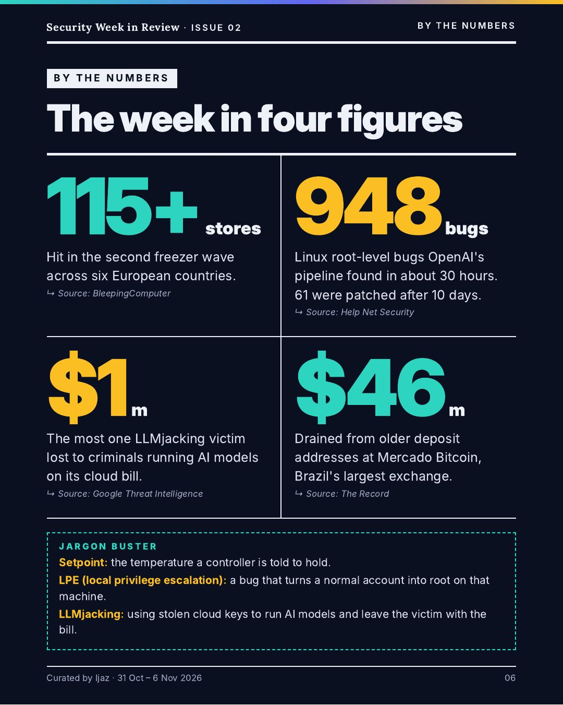
Read this page as text
BY THE NUMBERS
Security Week in Review · I S S U E 0 2
BY THE NUMBERS
The week in four figures
115+ 948 stores
Hit in the second freezer wave across six European countries. ↳ Source: BleepingComputer
$1
bugs
Linux root-level bugs OpenAI's pipeline found in about 30 hours. 61 were patched after 10 days. ↳ Source: Help Net Security
m
The most one LLMjacking victim lost to criminals running AI models on its cloud bill. ↳ Source: Google Threat Intelligence
$46
m
Drained from older deposit addresses at Mercado Bitcoin, Brazil's largest exchange. ↳ Source: The Record
JARGON BUSTER
Setpoint: the temperature a controller is told to hold. LPE (local privilege escalation): a bug that turns a normal account into root on that machine. LLMjacking: using stolen cloud keys to run AI models and leave the victim with the bill. Curated by Ijaz · 31 Oct – 6 Nov 2026
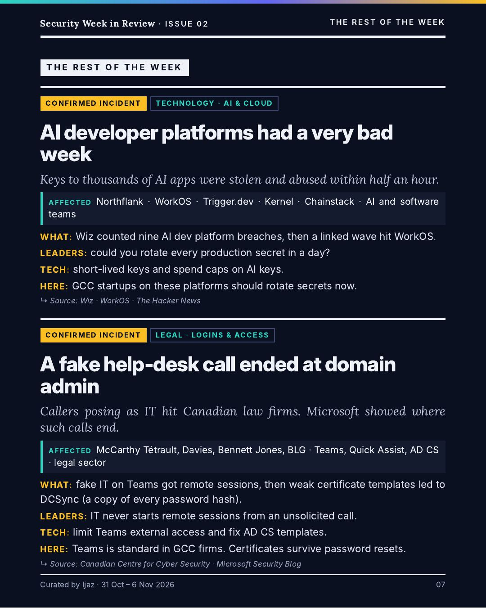
Read this page as text
Security Week in Review · I S S U E 0 2
THE REST OF THE WEEK
THE REST OF THE WEEK CONFIRMED INCIDENT
TECHNOLOGY · AI & CLOUD
AI developer platforms had a very bad week Keys to thousands of AI apps were stolen and abused within half an hour. A F F E C T E D Northflank · WorkOS · Trigger.dev · Kernel · Chainstack · AI and software
teams
WHAT: Wiz counted nine AI dev platform breaches, then a linked wave hit WorkOS. LEADERS: could you rotate every production secret in a day? TECH: short-lived keys and spend caps on AI keys. HERE: GCC startups on these platforms should rotate secrets now. ↳ Source: Wiz · WorkOS · The Hacker News CONFIRMED INCIDENT
LEGAL · LOGINS & ACCESS
A fake help-desk call ended at domain admin Callers posing as IT hit Canadian law firms. Microsoft showed where such calls end. A F F E C T E D McCarthy Tétrault, Davies, Bennett Jones, BLG · Teams, Quick Assist, AD CS
· legal sector
WHAT: fake IT on Teams got remote sessions, then weak certificate templates led to
DCSync (a copy of every password hash). LEADERS: IT never starts remote sessions from an unsolicited call. TECH: limit Teams external access and fix AD CS templates. HERE: Teams is standard in GCC firms. Certificates survive password resets. ↳ Source: Canadian Centre for Cyber Security · Microsoft Security Blog Curated by Ijaz · 31 Oct – 6 Nov 2026
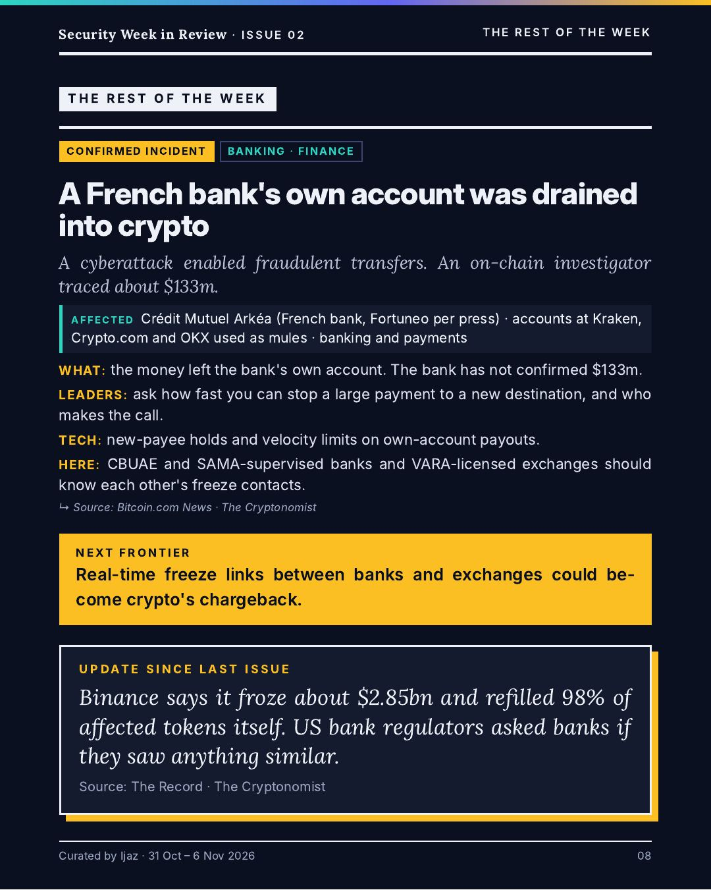
Read this page as text
Security Week in Review · I S S U E 0 2
THE REST OF THE WEEK
THE REST OF THE WEEK CONFIRMED INCIDENT
BANKING · FINANCE
A French bank's own account was drained into crypto A cyberattack enabled fraudulent transfers. An on-chain investigator traced about $133m. A F F E C T E D Crédit Mutuel Arkéa (French bank, Fortuneo per press) · accounts at Kraken,
Crypto.com and OKX used as mules · banking and payments
WHAT: the money left the bank's own account. The bank has not confirmed $133m. LEADERS: ask how fast you can stop a large payment to a new destination, and who
makes the call. TECH: new-payee holds and velocity limits on own-account payouts. HERE: CBUAE and SAMA-supervised banks and VARA-licensed exchanges should know each other's freeze contacts. ↳ Source: Bitcoin.com News · The Cryptonomist NEXT FRONTIER
Real-time freeze links between banks and exchanges could become crypto's chargeback. U P D AT E S I N C E L A S T I S S U E
Binance says it froze about $2.85bn and refilled 98% of affected tokens itself. US bank regulators asked banks if they saw anything similar. Source: The Record · The Cryptonomist
Curated by Ijaz · 31 Oct – 6 Nov 2026
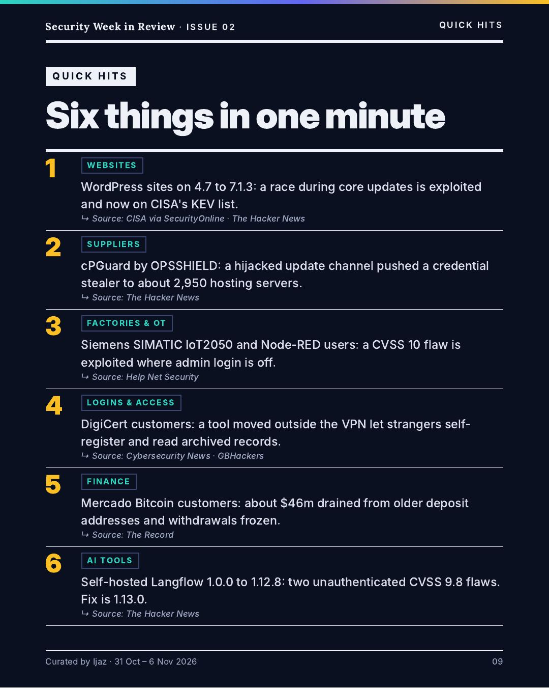
Read this page as text
Security Week in Review · I S S U E 0 2
QUICK HITS
QUICK HITS
Six things in one minute 1
WEBSITES
WordPress sites on 4.7 to 7.1.3: a race during core updates is exploited and now on CISA's KEV list. ↳ Source: CISA via SecurityOnline · The Hacker News
2 cPGuard by OPSSHIELD: a hijacked update channel pushed a credential SUPPLIERS
stealer to about 2,950 hosting servers. ↳ Source: The Hacker News
3 Siemens SIMATIC IoT2050 and Node-RED users: a CVSS 10 flaw is FACTORIES & OT
exploited where admin login is off. ↳ Source: Help Net Security
4 DigiCert customers: a tool moved outside the VPN let strangers selfLOGINS & ACCESS
register and read archived records. ↳ Source: Cybersecurity News · GBHackers
5 Mercado Bitcoin customers: about $46m drained from older deposit FINANCE
addresses and withdrawals frozen. ↳ Source: The Record
6 Self-hosted Langflow 1.0.0 to 1.12.8: two unauthenticated CVSS 9.8 flaws. AI TOOLS
Fix is 1.13.0.
↳ Source: The Hacker News
Curated by Ijaz · 31 Oct – 6 Nov 2026
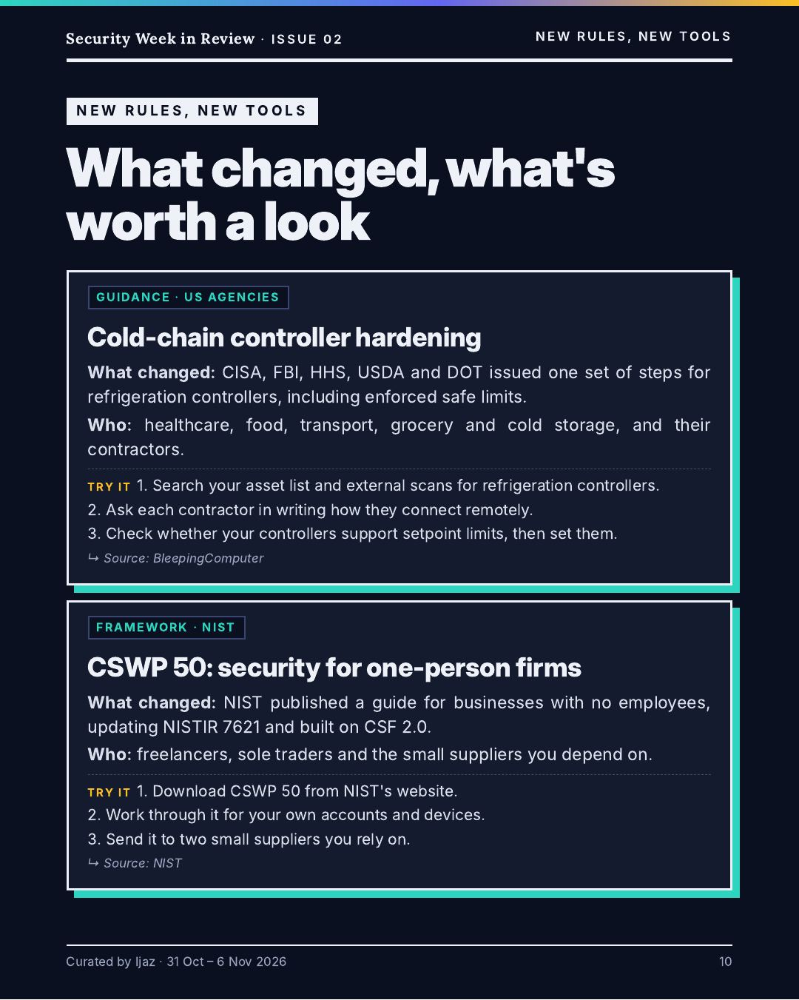
Read this page as text
Security Week in Review · I S S U E 0 2
N E W R U L E S , N E W TO O L S
NEW RULES, NEW TOOLS
What changed, what's worth a look GUIDANCE · US AGENCIES
Cold-chain controller hardening
What changed: CISA, FBI, HHS, USDA and DOT issued one set of steps for refrigeration controllers, including enforced safe limits. Who: healthcare, food, transport, grocery and cold storage, and their contractors. TRY IT 1. Search your asset list and external scans for refrigeration controllers.
2. Ask each contractor in writing how they connect remotely. 3. Check whether your controllers support setpoint limits, then set them. ↳ Source: BleepingComputer
FRAMEWORK · NIST
CSWP 50: security for one-person firms
What changed: NIST published a guide for businesses with no employees, updating NISTIR 7621 and built on CSF 2.0. Who: freelancers, sole traders and the small suppliers you depend on. TRY IT 1. Download CSWP 50 from NIST's website.
2. Work through it for your own accounts and devices. 3. Send it to two small suppliers you rely on. ↳ Source: NIST
Curated by Ijaz · 31 Oct – 6 Nov 2026
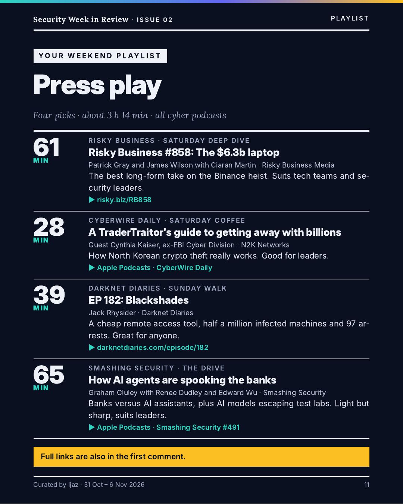
Read this page as text
Security Week in Review · I S S U E 0 2
P L AY L I S T
Y O U R W E E K E N D P L AY L I S T
Press play Four picks · about 3 h 14 min · all cyber podcasts
61 MIN
RISKY BUSINESS · SATURDAY DEEP DIVE
Risky Business #858: The $6.3b laptop
Patrick Gray and James Wilson with Ciaran Martin · Risky Business Media
The best long-form take on the Binance heist. Suits tech teams and security leaders.
28 MIN
▶ risky.biz/RB858
CYBERWIRE DAILY · SATURDAY COFFEE
A TraderTraitor's guide to getting away with billions Guest Cynthia Kaiser, ex-FBI Cyber Division · N2K Networks
How North Korean crypto theft really works. Good for leaders.
39 MIN
▶ Apple Podcasts · CyberWire Daily
DARKNET DIARIES · SUNDAY WALK
EP 182: Blackshades
Jack Rhysider · Darknet Diaries
A cheap remote access tool, half a million infected machines and 97 arrests. Great for anyone.
65 MIN
▶ darknetdiaries.com/episode/182
SMASHING SECURIT Y · THE DRIVE
How AI agents are spooking the banks
Graham Cluley with Renee Dudley and Edward Wu · Smashing Security
Banks versus AI assistants, plus AI models escaping test labs. Light but sharp, suits leaders. ▶ Apple Podcasts · Smashing Security #491
Full links are also in the first comment. Curated by Ijaz · 31 Oct – 6 Nov 2026
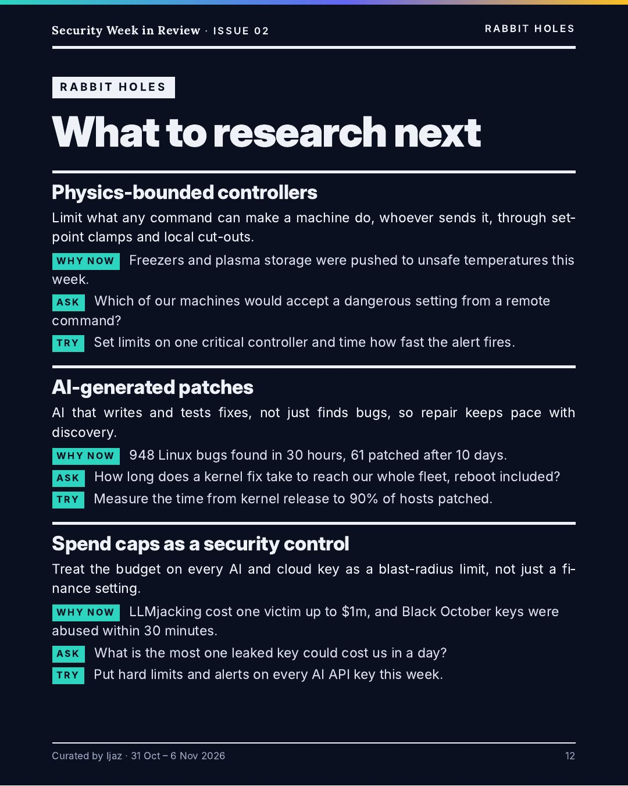
Read this page as text
Security Week in Review · I S S U E 0 2
RABBIT HOLES
RABBIT HOLES
What to research next Physics-bounded controllers
Limit what any command can make a machine do, whoever sends it, through setpoint clamps and local cut-outs. W H Y N OW Freezers and plasma storage were pushed to unsafe temperatures this week. AS K Which of our machines would accept a dangerous setting from a remote command? T RY Set limits on one critical controller and time how fast the alert fires.
AI-generated patches
AI that writes and tests fixes, not just finds bugs, so repair keeps pace with discovery. W H Y N OW 948 Linux bugs found in 30 hours, 61 patched after 10 days. AS K How long does a kernel fix take to reach our whole fleet, reboot included? T RY Measure the time from kernel release to 90% of hosts patched.
Spend caps as a security control
Treat the budget on every AI and cloud key as a blast-radius limit, not just a finance setting. W H Y N OW LLMjacking cost one victim up to $1m, and Black October keys were abused within 30 minutes. AS K What is the most one leaked key could cost us in a day? T RY Put hard limits and alerts on every AI API key this week.
Curated by Ijaz · 31 Oct – 6 Nov 2026
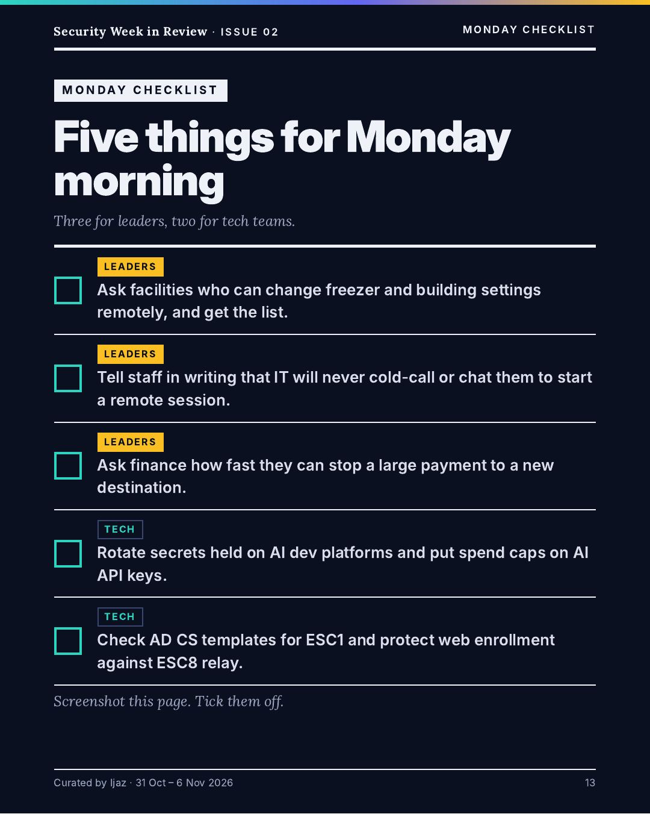
Read this page as text
Security Week in Review · I S S U E 0 2
M O N DAY C H E C K L I S T
M O N D AY C H E C K L I S T
Five things for Monday morning Three for leaders, two for tech teams. LEADERS
Ask facilities who can change freezer and building settings remotely, and get the list. LEADERS
Tell staff in writing that IT will never cold-call or chat them to start a remote session. LEADERS
Ask finance how fast they can stop a large payment to a new destination. TECH
Rotate secrets held on AI dev platforms and put spend caps on AI API keys. TECH
Check AD CS templates for ESC1 and protect web enrollment against ESC8 relay. Screenshot this page. Tick them off.
Curated by Ijaz · 31 Oct – 6 Nov 2026
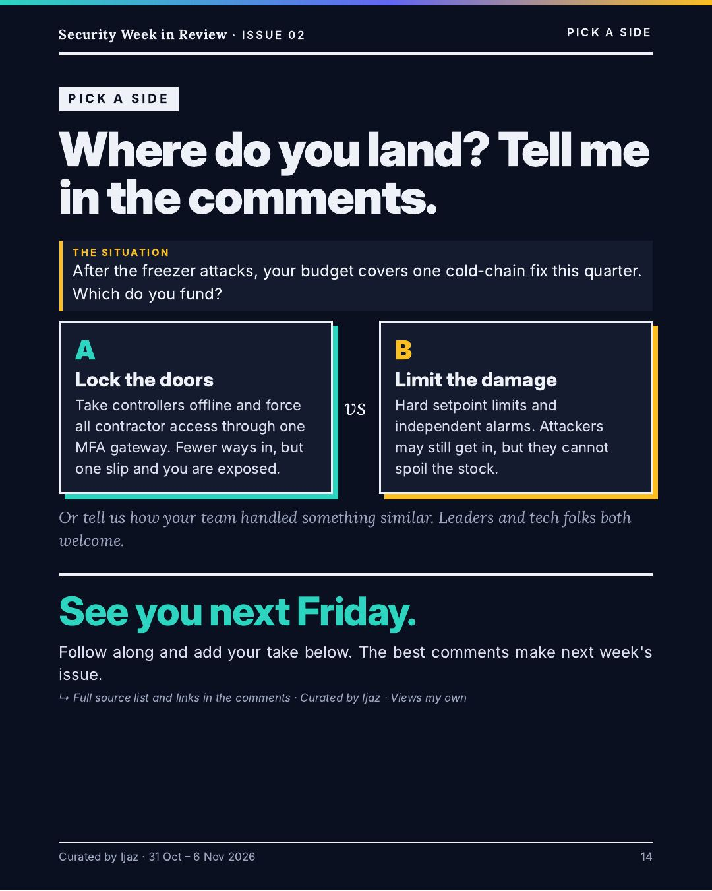
Read this page as text
PICK A SIDE
Security Week in Review · I S S U E 0 2
PICK A SIDE
Where do you land? Tell me in the comments. T H E S I T U AT I O N
After the freezer attacks, your budget covers one cold-chain fix this quarter. Which do you fund?
A
Lock the doors
Take controllers offline and force all contractor access through one MFA gateway. Fewer ways in, but one slip and you are exposed.
B vs
Limit the damage
Hard setpoint limits and independent alarms. Attackers may still get in, but they cannot spoil the stock.
Or tell us how your team handled something similar. Leaders and tech folks both welcome.
See you next Friday.
Follow along and add your take below. The best comments make next week's issue. ↳ Full source list and links in the comments · Curated by Ijaz · Views my own
Curated by Ijaz · 31 Oct – 6 Nov 2026